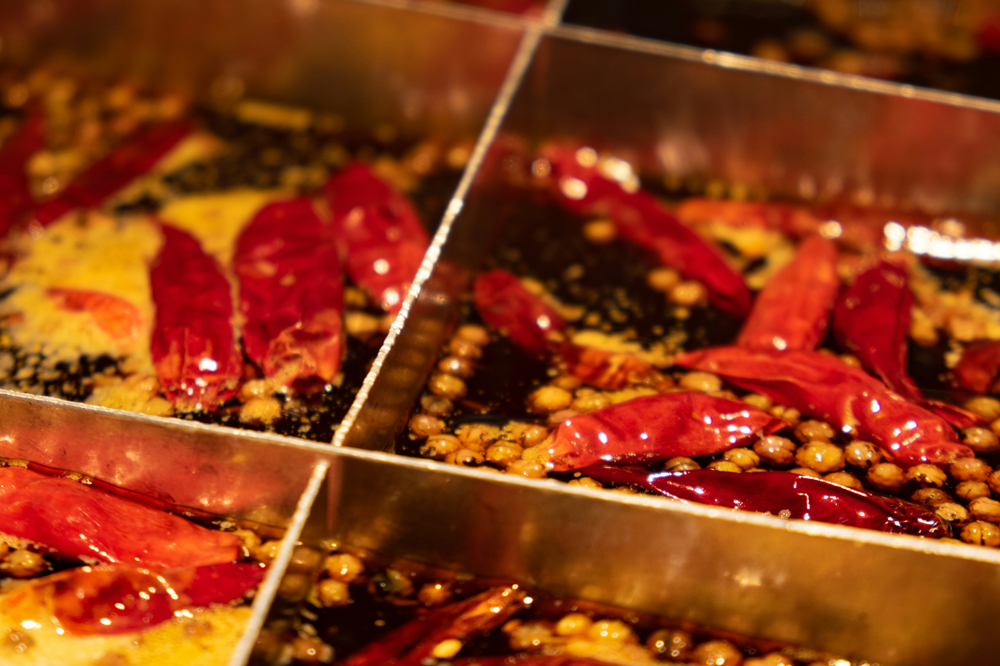

Hot Pot Recipe
Home

Photo by Peijia Li on Unsplash
Traditional Chongqing Hot Pot Recipe
Inspiration From The Woks Of Life Read The Recipe
Do you like to spicy food, come try this traditional chongqing hot pot recipe
Follow this recipe step by step:
Soup Base
- 2 tablespoons oil
- 6 slices ginger
- 3-5 bay leaves
- 10 cloves garlic (peeled)
- 1 cinnamon stick
- 5 star anise
- 10 cloves
- 1 tablespoon Sichuan peppercorns
- 12 whole dried red chilies
- 1 package spicy hot pot soup base
- 12-15 cups chicken stock
Dipping Sauce
- Soy sauce
- Sacha sauce
- Chili oil or paste
- Chinese black vinegar (or rice vinegar)
- Sesame paste (or peanut butter)
- Sesame oil
- Sesame seeds
- Chopped peanuts
- Chopped cilantro
- Chopped scallions
- Chopped garlic
Hot Pot Main Dishes
- Thinly shaved beef or lamb
- Sliced chicken
- Assorted fish balls (you can buy these pre-made at Asian grocery stores)
- Thinly sliced fish fillets (tender white fish like tilapia or sea bass work well for this)
- Tofu sheets
- Firm tofu (sliced)
- Soy puffs (fried tofu puffs)
- Straw mushrooms
- Shiitake mushrooms
- Wood ear mushrooms
- Fresh noodles
- Glass noodles (mung bean vermicelli)
- Prepared frozen dumplings or wontons
- Chinese rice cakes
- Bok choy (or choy sum)
- Green leaf lettuce
- Napa cabbage
Cooking Instructions
Soup Base
- In a wok over medium heat, add the oil and the ginger. Cook the ginger for about a minute until caramelized, making sure it doesn't burn. Add the bay leaves, whole garlic cloves, cinnamon stick, star anise, and cloves. Cook for another 2 minutes, until very fragrant.
- Add the Sichuan peppercorns, dried chilies (whole), and the spicy hot pot soup base. Cook for another 2 minutes, and then add the chicken stock. Bring to a boil and transfer to the pot you'll be using for your hot pot meal. You want the pot to be relatively wide and at least 6 inches deep.
- To make the dipping sauce, simply combine whatever mix of ingredients you like.
- To assemble the hotpot, simply plug in your hot plate, place the prepared pot of broth on top, and bring to a low boil or simmer. Place all of your prepared ingredients around it, have everyone mix up their own dipping sauces, and dive in. Each person just takes whatever they want, adds it to the pot, waits for it to cook, and then dips it into their sauce. As the water evaporates as you're cooking, add boiling water to the pot as needed. You can also serve rice with hot pot (we do), but it's not mandatory.